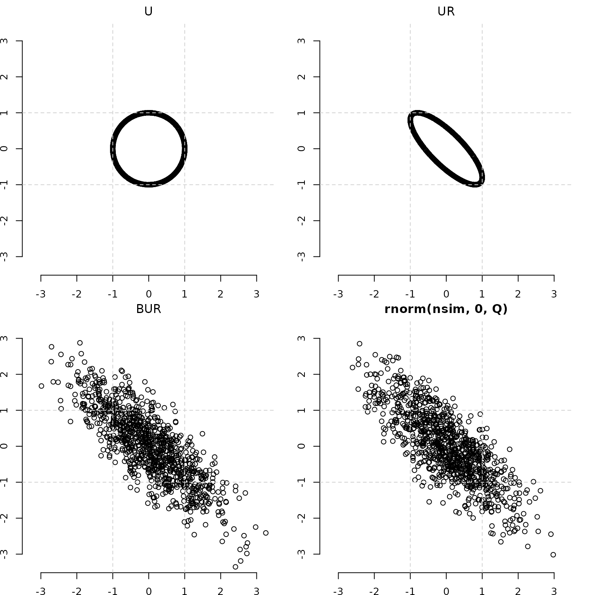

library(uniformly)
set.seed(6789)
## creator view
nsim <- 1e3
d <- 2
chisq_draw <- rchisq(nsim, df=d)
#chisq_draw <- rexp(nsim, rate=1)
# chisq_draw <- 4
# chisq_draw <- sample(c(4,1,0), nsim, TRUE)
# chisq_draw <- runif(nsim, 0, 4)
# chisq_draw <- -1
# chisq_draw <- rbinom(nsim,1,prob=0.5 )
# chisq_draw <- rpois(nsim,1)
# chisq_draw <- rbeta(nsim,.20,.20)
# chisq_draw <- rbeta(nsim,2.0,2.0)
# chisq_draw <- rbeta(nsim,20,20)
# chisq_draw <- rgamma(nsim, 1,.1)
#chi_sq_draw <- rcauchy(nsim,0,10)^2 ## see connection to betaprimeTake the draw from above.
Apply it to the uniform on the sphere (for d=2 this is a circle).
unif_draw <- uniformly::runif_on_sphere(nsim,d)Get a nice rotation going with chol.
spread <- 1
rho <- -0.80
SIGMA <- spread*diag(d) + rho - diag(d)*rho
SIGMA
#> [,1] [,2]
#> [1,] 1.0 -0.8
#> [2,] -0.8 1.0
chol(SIGMA)
#> [,1] [,2]
#> [1,] 1 -0.8
#> [2,] 0 0.6Out of all the stuff generated, find the max so we can standardize the axes.
This is the uniform circle.
par(pty='s', mfrow=c(2,2), bty="n", oma=rep(0,4), mai=c(0.3,0,0.3,0))
plot( unif_draw,
xlim=maxrange*c(-1,1),
ylim=maxrange*c(-1,1),
xlab="",
ylab="",
main=expression(paste("U")))
abline(h=c(-1,1), v=c(-1,1), lty=2, col="lightgrey")
par(pty='s')
plot( unif_draw %*% chol(SIGMA),
xlim=maxrange*c(-1,1),
ylim=maxrange*c(-1,1),
xlab="",
ylab="",
main=expression(paste("U", Sigma^{~~1/2})))
abline(h=c(-1,1), v=c(-1,1), lty=2, col="lightgrey")
par(pty='s')
plot(sign(chisq_draw)*sqrt(abs(chisq_draw)) * unif_draw %*% chol(SIGMA),
xlim=maxrange*c(-1,1),
ylim=maxrange*c(-1,1),
xlab="",
ylab="",
main=expression(paste(A^{1/2},"U", Sigma^{~~1/2})))
abline(h=c(-1,1), v=c(-1,1), lty=2, col="lightgrey")
par(pty='s')
plot(mvtnorm::rmvnorm(nsim, sigma=SIGMA),
xlim=maxrange*c(-1,1),
ylim=maxrange*c(-1,1),
xlab="",
ylab="",
main="rnorm(nsim, 0, SIGMA)")
abline(h=c(-1,1), v=c(-1,1), lty=2, col="lightgrey")
is the uniform circle transformed into an ellipse
,
where
= (R-code: chol(SIGMA)).
Then each point of the ellipse is multiplied by the square root of the random draw from the mixing distribution .
And a MVN(0, Sigma) draw for comparison, as procured by
rnorm(nsim,0,SIGMA).